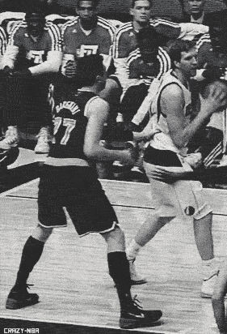
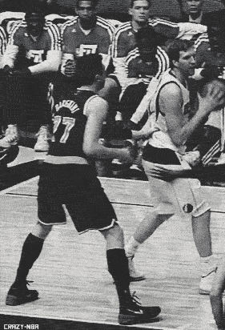

Dirk Nowitzki
 Owns career averages of 22.5 points, 8.1 rebounds, 2.6 assists and 35.9 minutes per game…Mavericks’ all-time leader in points (26,786), rebounds (9,594), FGs (9,407), 3FGs (1,471), FTs (6,501), starts (1,157), games (1,188) and minutes (42,603)…passed Oscar Robertson (26,710) for 10th place on the NBA’s all-time scoring list at UTA (4/8/14)…became the 13th player in NBA history to eclipse the 26,000-point mark vs. HOU (1/29/14)…has scored at least 1,000 points in 14 of the last 15 seasons (1999-2012, 2013-14), finishing with 917 points in 2012-13 after being limited to 53 games following right knee surgery…became the 17th member of the 25,000-point club at NO (4/14/13)…2011 NBA Finals MVP…reached the 20,000-point plateau vs. LAL (1/13/10), becoming the 34th player (first European-born player) in NBA history to achieve the milestone…became the franchise’s leading scorer vs. NJ (3/8/08) when he earned his 16,644th point to pass Rolando Blackman (16,643)…recorded his 1,000th career block vs. BOS (2/20/12), becoming 1 of 3 players in NBA history with 1,000+ 3-pointers and 1,000+ blocks (Clifford Robinson, Rasheed Wallace)…19 career 40-point games…236 career 30-point games…as a starter in the 2010 NBA All-Star Game (Dallas), scored a personal-best 22 points to go with 4 rebounds, 2 assists and 1 steal in 28 minutes…named MVP of the 2006-07 NBA season after being the only player in the league to shoot 50% from the field, 40% from 3-point range and 90% from the foul line…finished third in voting for the 2004-05 and 2005-06 MVP award…second Maverick and first European to start an All-Star Game (2007)…in 2004-05, became the first European player (born and raised) to be named First Team All-NBA…also became the first player who did not attend a U.S. high school or university to achieve the honor…12 straight All-NBA Team selections (2000-12)…First Team All-NBA (2004-05, 2005-06, 2006-07, 2008-09)…Second Team All-NBA (2001-02, 2002-03, 2007-08, 2009-10, 2010-11)…Third Team All-NBA (2000-01, 2003-04, 2011-12)…in 2000-01, became the first Maverick in team history to be named All-NBA (Third Team selection)…has appeared in a team-record 12 All-Star Games (2002-12, 2013-14)…named NBA Western Conference Player of the Week twice in a span of three weeks in 2010-11 (11/22-11/28/10 and 12/6-12/12/10)…17-time NBA Western Conference Player of the Week including a Western Conference-best 4 times in the 2009-10 season (only Mav to be named POW 4 times in a single season)…named NBA Co-Western Conference Player of the Month with Michael Finley and Steve Nash after leading Dallas to a 14-0 start (Nov., 2002)…named Western Conference Player of the Month twice in 2004-05 (Dec., Feb.), in Dec., 2005, in Feb., 2007 and in Apr., 2009…became first Maverick to appear on the cover of Sports Illustrated (5/6/02)…against HOU (12/2/04), scored 53 points in an overtime win, marking career and franchise-highs…scored 51 points, which is the most by a Maverick in a regulation game, vs. GS (3/23/06)…in 2000-01, became the second player in NBA history to have 100+ 3- pointers and blocks in the same season (Robert Horry, 1995-96)…in 2005-06, became the third player in league history to average at least 26.0 points while shooting 90.0% or better from the line joining Rick Barry and Larry Bird…during the 2000 All-Star Weekend, participated in the Schick Rookie Challenge and finished second in the AT&T Shootout…was also in the AT&T Shootout in 2001 and 2007 and won the event in 2006…along with TNT analyst/Rockets legend Kenny Smith and San Antonio Silver Stars guard Becky Hammon, won the 2010 Haier Shooting Stars contest on All-Star Saturday Night (Dallas)…finished as the runner-up in the competition in 2011 (Los Angeles).
(this information came from http://www.nba.com/playerfile/dirk_nowitzki/bio/)

Owns career averages of 22.5 points, 8.1 rebounds, 2.6 assists and 35.9 minutes per game…Mavericks’ all-time leader in points (26,786), rebounds (9,594), FGs (9,407), 3FGs (1,471), FTs (6,501), starts (1,157), games (1,188) and minutes (42,603)…passed Oscar Robertson (26,710) for 10th place on the NBA’s all-time scoring list at UTA (4/8/14)…became the 13th player in NBA history to eclipse the 26,000-point mark vs. HOU (1/29/14)…has scored at least 1,000 points in 14 of the last 15 seasons (1999-2012, 2013-14), finishing with 917 points in 2012-13 after being limited to 53 games following right knee surgery…became the 17th member of the 25,000-point club at NO (4/14/13)…2011 NBA Finals MVP…reached the 20,000-point plateau vs. LAL (1/13/10), becoming the 34th player (first European-born player) in NBA history to achieve the milestone…became the franchise’s leading scorer vs. NJ (3/8/08) when he earned his 16,644th point to pass Rolando Blackman (16,643)…recorded his 1,000th career block vs. BOS (2/20/12), becoming 1 of 3 players in NBA history with 1,000+ 3-pointers and 1,000+ blocks (Clifford Robinson, Rasheed Wallace)…19 career 40-point games…236 career 30-point games…as a starter in the 2010 NBA All-Star Game (Dallas), scored a personal-best 22 points to go with 4 rebounds, 2 assists and 1 steal in 28 minutes…named MVP of the 2006-07 NBA season after being the only player in the league to shoot 50% from the field, 40% from 3-point range and 90% from the foul line…finished third in voting for the 2004-05 and 2005-06 MVP award…second Maverick and first European to start an All-Star Game (2007)…in 2004-05, became the first European player (born and raised) to be named First Team All-NBA…also became the first player who did not attend a U.S. high school or university to achieve the honor…12 straight All-NBA Team selections (2000-12)…First Team All-NBA (2004-05, 2005-06, 2006-07, 2008-09)…Second Team All-NBA (2001-02, 2002-03, 2007-08, 2009-10, 2010-11)…Third Team All-NBA (2000-01, 2003-04, 2011-12)…in 2000-01, became the first Maverick in team history to be named All-NBA (Third Team selection)…has appeared in a team-record 12 All-Star Games (2002-12, 2013-14)…named NBA Western Conference Player of the Week twice in a span of three weeks in 2010-11 (11/22-11/28/10 and 12/6-12/12/10)…17-time NBA Western Conference Player of the Week including a Western Conference-best 4 times in the 2009-10 season (only Mav to be named POW 4 times in a single season)…named NBA Co-Western Conference Player of the Month with Michael Finley and Steve Nash after leading Dallas to a 14-0 start (Nov., 2002)…named Western Conference Player of the Month twice in 2004-05 (Dec., Feb.), in Dec., 2005, in Feb., 2007 and in Apr., 2009…became first Maverick to appear on the cover of Sports Illustrated (5/6/02)…against HOU (12/2/04), scored 53 points in an overtime win, marking career and franchise-highs…scored 51 points, which is the most by a Maverick in a regulation game, vs. GS (3/23/06)…in 2000-01, became the second player in NBA history to have 100+ 3- pointers and blocks in the same season (Robert Horry, 1995-96)…in 2005-06, became the third player in league history to average at least 26.0 points while shooting 90.0% or better from the line joining Rick Barry and Larry Bird…during the 2000 All-Star Weekend, participated in the Schick Rookie Challenge and finished second in the AT&T Shootout…was also in the AT&T Shootout in 2001 and 2007 and won the event in 2006…along with TNT analyst/Rockets legend Kenny Smith and San Antonio Silver Stars guard Becky Hammon, won the 2010 Haier Shooting Stars contest on All-Star Saturday Night (Dallas)…finished as the runner-up in the competition in 2011 (Los Angeles).
(this information came from http://www.nba.com/playerfile/dirk_nowitzki/bio/)
